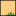

<!doctype html>
<html lang="en">
    <head>
        <meta charset="utf-8">
        <meta http-equiv="X-UA-Compatible" content="IE=edge">
        <meta name="viewport" content="initial-scale=1,user-scalable=no,maximum-scale=1,width=device-width">
        <meta name="mobile-web-app-capable" content="yes">
        <meta name="apple-mobile-web-app-capable" content="yes">
        <link rel="stylesheet" href="css/leaflet.css">
        <link rel="stylesheet" href="css/qgis2web.css">
        <style>
        #map {
            width: 1468px;
            height: 888px;
        }
        </style>
        <title></title>
    </head>
    <body>
        <div id="map">
        </div>
        <script src="js/qgis2web_expressions.js"></script>
        <script src="js/leaflet.js"></script>
        <script src="js/multi-style-layer.js"></script>
        <script src="js/leaflet.rotatedMarker.js"></script>
        <script src="js/leaflet.pattern.js"></script>
        <script src="js/leaflet-hash.js"></script>
        <script src="js/Autolinker.min.js"></script>
        <script src="js/rbush.min.js"></script>
        <script src="js/labelgun.min.js"></script>
        <script src="js/labels.js"></script>
        <script src="data/17PAPPIPASSA00005L058CLPolygon_0.js"></script>
        <script src="data/17PAPPIPASSA00005L058CLPoint_1.js"></script>
        <script>
        var map = L.map('map', {
            zoomControl:true, maxZoom:28, minZoom:1
        }).fitBounds([[25.5229426104,-101.793335946],[25.5593395593,-101.726530106]]);
        var hash = new L.Hash(map);
        map.attributionControl.addAttribution('<a href="https://github.com/tomchadwin/qgis2web" target="_blank">qgis2web</a>');
        var bounds_group = new L.featureGroup([]);
        var basemap0 = L.tileLayer('http://{s}.tile.openstreetmap.org/{z}/{x}/{y}.png', {
            attribution: '&copy; <a href="http://openstreetmap.org">OpenStreetMap</a> contributors,<a href="http://creativecommons.org/licenses/by-sa/2.0/">CC-BY-SA</a>',
            maxZoom: 28
        });
        basemap0.addTo(map);
        function setBounds() {
        }
        function pop_17PAPPIPASSA00005L058CLPolygon_0(feature, layer) {
        }

        function style_17PAPPIPASSA00005L058CLPolygon_0_0(feature) {
            switch(String(feature.properties['Name'])) {
                case 'Cerco de exclusión':
                    return {
                pane: 'pane_17PAPPIPASSA00005L058CLPolygon_0',
                opacity: 1,
                color: 'rgba(175,179,138,1.0)',
                dashArray: '',
                lineCap: 'butt',
                lineJoin: 'miter',
                weight: 1.0, 
                fill: true,
                fillOpacity: 1,
                fillColor: 'rgba(241,244,199,1.0)',
            }
                    break;
                case 'Paso de rodillo aereador':
                    return {
                pane: 'pane_17PAPPIPASSA00005L058CLPolygon_0',
                opacity: 1,
                color: 'rgba(175,179,138,1.0)',
                dashArray: '',
                lineCap: 'butt',
                lineJoin: 'miter',
                weight: 1.0, 
                fill: true,
                fillOpacity: 1,
                fillColor: 'rgba(241,244,199,1.0)',
            }
                    break;
                case 'Reforestacón con especies nativas':
                    return {
                pane: 'pane_17PAPPIPASSA00005L058CLPolygon_0',
            }
                    break;
                case 'Terrazas de base angosta':
                    return {
                pane: 'pane_17PAPPIPASSA00005L058CLPolygon_0',
                opacity: 1,
                color: 'rgba(128,152,72,1.0)',
                dashArray: '',
                lineCap: 'butt',
                lineJoin: 'miter',
                weight: 1.0, 
                fill: true,
                fillOpacity: 1,
                fillColor: 'rgba(255,204,128,1.0)',
            }
                    break;
            }
        }
        function style_17PAPPIPASSA00005L058CLPolygon_0_1(feature) {
            switch(String(feature.properties['Name'])) {
                case 'Cerco de exclusión':
                    return {
                pane: 'pane_17PAPPIPASSA00005L058CLPolygon_0',
            }
                    break;
                case 'Paso de rodillo aereador':
                    return {
                pane: 'pane_17PAPPIPASSA00005L058CLPolygon_0',
            }
                    break;
                case 'Reforestacón con especies nativas':
                    return {
                pane: 'pane_17PAPPIPASSA00005L058CLPolygon_0',
            }
                    break;
                case 'Terrazas de base angosta':
                    return {
                pane: 'pane_17PAPPIPASSA00005L058CLPolygon_0',
            }
                    break;
            }
        }
        map.createPane('pane_17PAPPIPASSA00005L058CLPolygon_0');
        map.getPane('pane_17PAPPIPASSA00005L058CLPolygon_0').style.zIndex = 400;
        map.getPane('pane_17PAPPIPASSA00005L058CLPolygon_0').style['mix-blend-mode'] = 'normal';
        var layer_17PAPPIPASSA00005L058CLPolygon_0 = new L.geoJson.multiStyle(json_17PAPPIPASSA00005L058CLPolygon_0, {
            attribution: '<a href=""></a>',
            pane: 'pane_17PAPPIPASSA00005L058CLPolygon_0',
            onEachFeature: pop_17PAPPIPASSA00005L058CLPolygon_0,
            styles: [style_17PAPPIPASSA00005L058CLPolygon_0_0,style_17PAPPIPASSA00005L058CLPolygon_0_1,]
        });
        bounds_group.addLayer(layer_17PAPPIPASSA00005L058CLPolygon_0);
        map.addLayer(layer_17PAPPIPASSA00005L058CLPolygon_0);
        function pop_17PAPPIPASSA00005L058CLPoint_1(feature, layer) {
        }

        function style_17PAPPIPASSA00005L058CLPoint_1_0(feature) {
            switch(String(feature.properties['Name'])) {
                case 'Desazolve de Bordo de Tierra Para Abrevadero':
                    return {
                pane: 'pane_17PAPPIPASSA00005L058CLPoint_1',
        rotationAngle: 0.0,
        rotationOrigin: 'center center',
        icon: L.icon({
            iconUrl: 'markers/poi_cave.svg',
            iconSize: [26.6, 26.6]
        }),
            }
                    break;
                case 'Jalpa':
                    return {
                pane: 'pane_17PAPPIPASSA00005L058CLPoint_1',
        rotationAngle: 0.0,
        rotationOrigin: 'center center',
        icon: L.icon({
            iconUrl: 'markers/house.svg',
            iconSize: [26.6, 26.6]
        }),
            }
                    break;
            }
        }
        map.createPane('pane_17PAPPIPASSA00005L058CLPoint_1');
        map.getPane('pane_17PAPPIPASSA00005L058CLPoint_1').style.zIndex = 401;
        map.getPane('pane_17PAPPIPASSA00005L058CLPoint_1').style['mix-blend-mode'] = 'normal';
        var layer_17PAPPIPASSA00005L058CLPoint_1 = new L.geoJson(json_17PAPPIPASSA00005L058CLPoint_1, {
            attribution: '<a href=""></a>',
            pane: 'pane_17PAPPIPASSA00005L058CLPoint_1',
            onEachFeature: pop_17PAPPIPASSA00005L058CLPoint_1,
            pointToLayer: function (feature, latlng) {
                var context = {
                    feature: feature,
                    variables: {}
                };
                return L.marker(latlng, style_17PAPPIPASSA00005L058CLPoint_1_0(feature));
            },
        });
        bounds_group.addLayer(layer_17PAPPIPASSA00005L058CLPoint_1);
        map.addLayer(layer_17PAPPIPASSA00005L058CLPoint_1);
        var baseMaps = {};
        L.control.layers(baseMaps,{'17-PAPP-IPASSA-00005-L058-CL Point<br /><table><tr><td style="text-align: center;"></td><td>Desazolve de Bordo de Tierra Para Abrevadero</td></tr><tr><td style="text-align: center;"></td><td>Jalpa</td></tr></table>': layer_17PAPPIPASSA00005L058CLPoint_1,'17-PAPP-IPASSA-00005-L058-CL Polygon<br /><table><tr><td style="text-align: center;"></td><td>Cerco de exclusión</td></tr><tr><td style="text-align: center;"></td><td>Paso de rodillo aereador</td></tr><tr><td style="text-align: center;"></td><td>Reforestacón con especies nativas</td></tr><tr><td style="text-align: center;"></td><td>Terrazas de base angosta</td></tr></table>': layer_17PAPPIPASSA00005L058CLPolygon_0,},{collapsed:false}).addTo(map);
        setBounds();
        var i = 0;
        layer_17PAPPIPASSA00005L058CLPolygon_0.eachLayer(function(layer) {
            var context = {
                feature: layer.feature,
                variables: {}
            };
            layer.bindTooltip((layer.feature.properties['Name'] !== null?String('<div style="color: #000000; font-size: 10pt; font-family: \'Arial\', sans-serif;">' + layer.feature.properties['Name']) + '</div>':''), {permanent: true, offset: [-0, -16], className: 'css_17PAPPIPASSA00005L058CLPolygon_0'});
            labels.push(layer);
            totalMarkers += 1;
              layer.added = true;
              addLabel(layer, i);
              i++;
        });
        var i = 0;
        layer_17PAPPIPASSA00005L058CLPoint_1.eachLayer(function(layer) {
            var context = {
                feature: layer.feature,
                variables: {}
            };
            layer.bindTooltip((layer.feature.properties['Name'] !== null?String('<div style="color: #000000; font-size: 10pt; font-family: \'Arial\', sans-serif;">' + layer.feature.properties['Name']) + '</div>':''), {permanent: true, offset: [-0, -16], className: 'css_17PAPPIPASSA00005L058CLPoint_1'});
            labels.push(layer);
            totalMarkers += 1;
              layer.added = true;
              addLabel(layer, i);
              i++;
        });
        resetLabels([layer_17PAPPIPASSA00005L058CLPolygon_0,layer_17PAPPIPASSA00005L058CLPoint_1]);
        map.on("zoomend", function(){
            resetLabels([layer_17PAPPIPASSA00005L058CLPolygon_0,layer_17PAPPIPASSA00005L058CLPoint_1]);
        });
        map.on("layeradd", function(){
            resetLabels([layer_17PAPPIPASSA00005L058CLPolygon_0,layer_17PAPPIPASSA00005L058CLPoint_1]);
        });
        map.on("layerremove", function(){
            resetLabels([layer_17PAPPIPASSA00005L058CLPolygon_0,layer_17PAPPIPASSA00005L058CLPoint_1]);
        });
        </script>
    </body>
</html>
